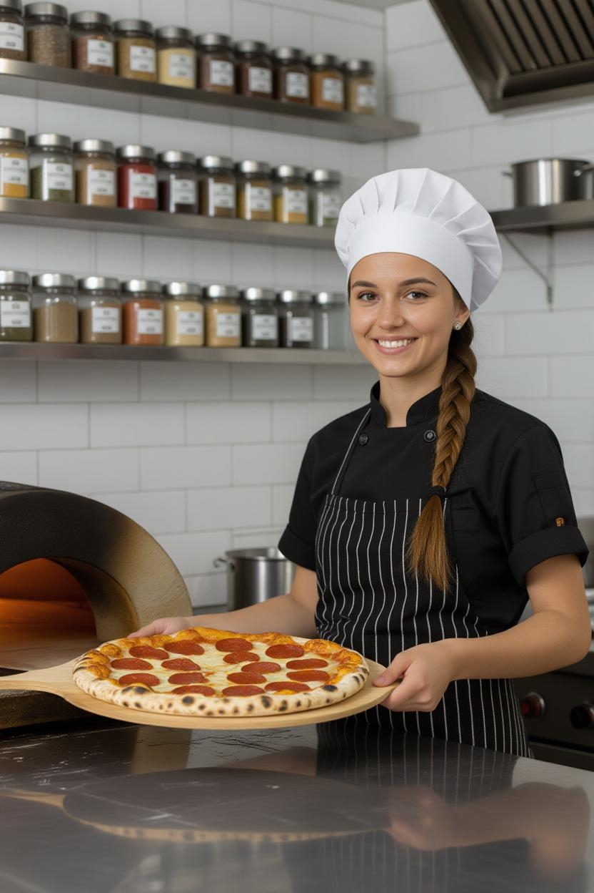

Sobre Nosotros
Desde 1999, elaboramos las pizzas más sabrosas de la ciudad, combinando recetas italianas con ingrendientes locales frescos.
Nuestro Equipo
Personal capacitado y amable, siempre listo para atenderte con la mejor sonrisa."
Chef Marco, especialista en pizzas artesanales, combina tradición y creatividad en cada receta
Ana Rodríguez, dueña y fundadora, apasionada por ofrecer la mejor pizza y un servicio de calidad."
Misión
Ofrecer una experiencia gastronómica llena de sabor,tradición y excelente servicio.Visión
Ser la pizzería favorita de la comunidad, reconocida por su sabor auténtico, atención cercana y compromiso con la calidad en cada experiencia.
© 2025 Pizzeria El Buen Sabor